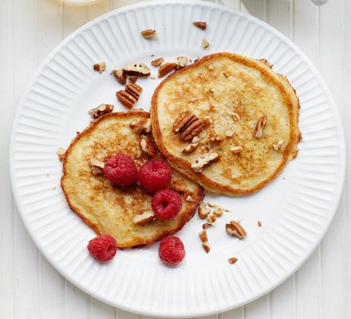

Gluten-free banana pancakes you can whip up in just 10 minutes!
Scatter with pecans and raspberries to enjoy a low-calorie (but
still indulgent) breakfast
Ingredients
- 1 large banana
- 2 medium eggs, beaten
- pinch of baking powder (gluten-free if coeliac)
- splash of vanilla extract
- 1 tsp oil
- 25g pecans, roughly chopped
- 125g raspberries
Steps
-
In a bowl, mash 1 large banana with a fork until it resembles a
thick purée.
-
Stir in 2 beaten eggs, a pinch of baking powder (gluten-free if
coeliac) and a splash of vanilla extract.
-
Heat a large non-stick frying pan or pancake pan over a medium
heat and brush with ½ tsp oil.
-
Using half the batter, spoon two pancakes into the pan, cook for
1-2 mins each side, then tip onto a plate. Repeat the process
with another ½ tsp oil and the remaining batter./li>
-
Top the pancakes with 25g roughly chopped pecans and 125g
raspberries.